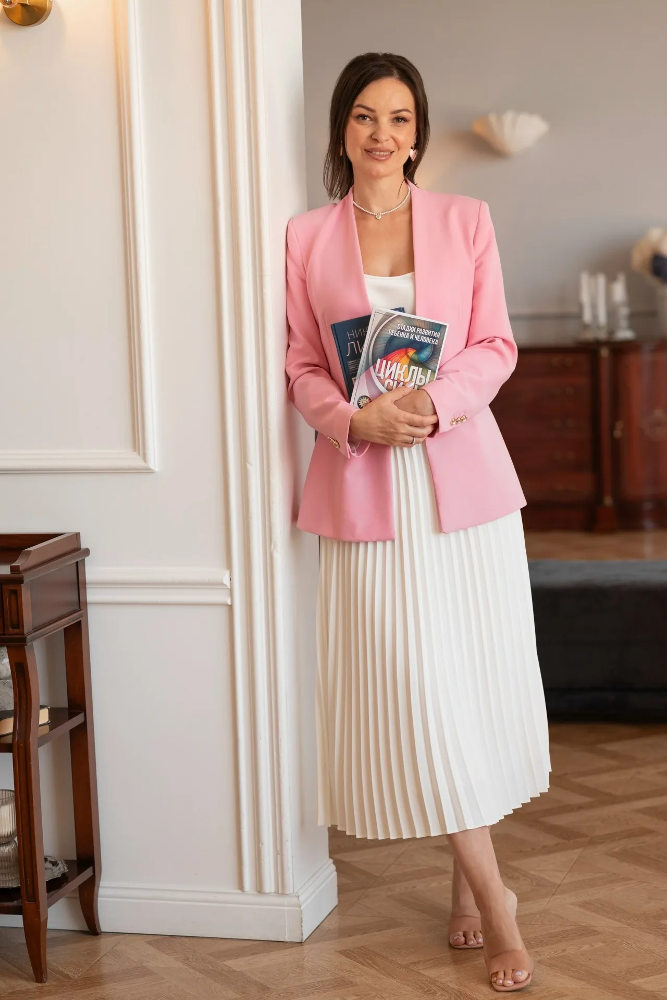
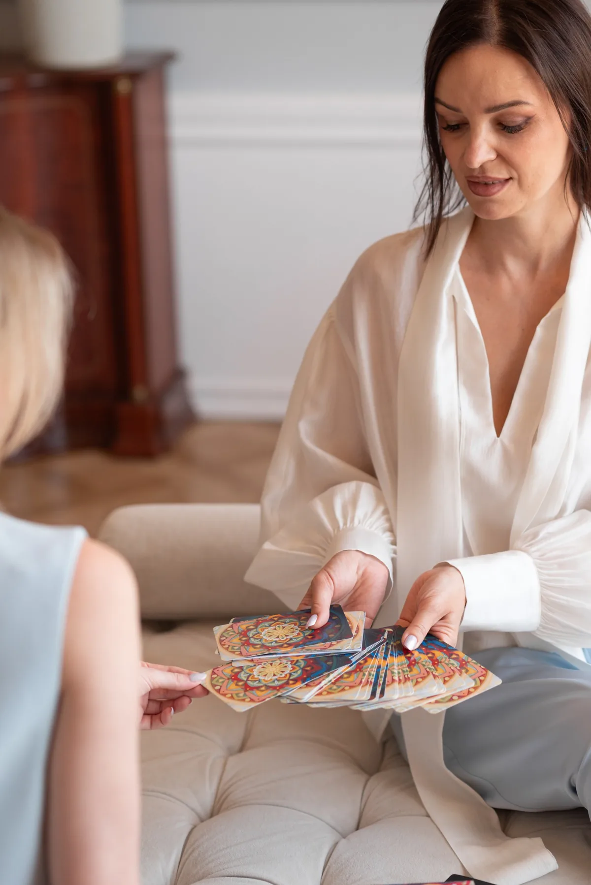
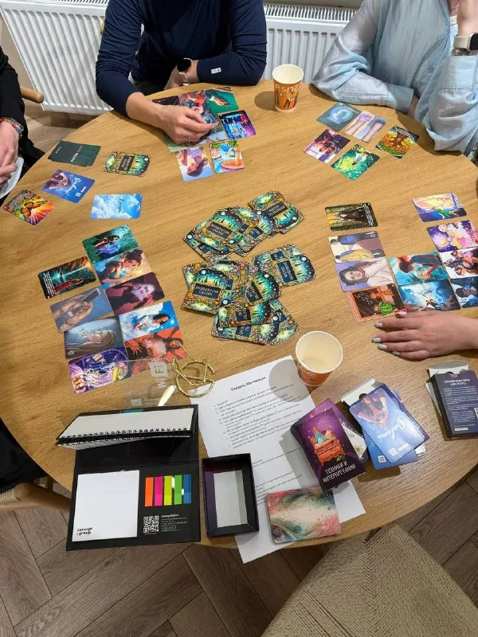

Психолог в Краснодаре · онлайн и в кабинете
Помогу разобраться с чувством вины, научиться выстраивать личные границы и перестать жить в постоянной тревоге. Уютное, безопасное пространство для перемен
Напишите мне, и мы вместе подберём удобное время для первой встречи

В отношениях с близкими снова и снова повторяется одно и то же, и каждый раз больно? — разберём привычные реакции и попробуем новые способы контакта
Сложно сказать «нет»? Соглашаетесь помочь, даже когда нет сил, а потом злитесь и чувствуете вину? — помогаю выбирать себя и сохранять отношения
Внутренний критик не даёт действовать? — будем снижать его влияние и укреплять опору на себя
«Как раньше уже не могу, а по-новому не знаю, как»? — помогу бережно перестроить привычный сценарий
Не понимаете, чего хотите, и от этого внутри напряжение? — вместе найдём опорные точки и первые понятные шаги
Деньги вызывают стыд, вину или тревогу? — разберём, какие установки и страхи за этим стоят, и снизим внутреннее напряжение
Без осуждения, только поддержка и внимание к вашей ситуации
Спокойствие, опора и ясность. Понимание, что можно по-другому, и инструменты, как это сделать
Разберём, что на самом деле стоит за тревогой, виной или усталостью: какие старые сценарии и установки заставляют вас действовать «на автопилоте». Например, почему «хочу отказать» превращается в «опять согласилась»
Тело часто подсказывает раньше, чем мысль: зажимы в плечах, ком в горле, бессонница. Научимся считывать эти сигналы и вовремя снижать нагрузку простыми способами
Не идеальные, а такие, где можно спокойно сказать: «Мне это неприятно», «Сейчас не готова», и при этом не чувствовать себя виноватой. Просить о поддержке так, чтобы это слышали. Будем тренировать понятные формулировки и новые форматы контакта
Работаем не над «стать идеальной», а над тем, чтобы стало тише внутри: снижаем требования к себе, убираем лишние «надо» и добавляем опору там, где её не хватает
Здесь не будет осуждения и готовых рецептов. Только бережное сопровождение: чтобы вы могли двигаться в своём темпе и не обесценивать маленькие шаги

Меня зовут Ирина. Я психолог, МАК-терапевт и психосоматолог. В психологию я пришла накануне кризиса среднего возраста: внешне всё было хорошо, но чувство, что что-то не так, не покидало. Я сама была скептиком и искала не «волшебную таблетку», а реальное понимание: что происходит и как можно изменить своё состояние. Я нашла эти ответы — и продолжаю искать: ведь внутренние изменения — процесс небыстрый.
Теперь хочу помогать другим идти этим путём. Работаю бережно: без готовых ответов, но с опорой и понятными инструментами. Если вам важно быть услышанным без осуждения — буду рада познакомиться.
Я не даю гарантий «решить всё за N сессий», но даю стабильную поддержку и понятные инструменты. Результаты индивидуальны: у каждого свой темп и своя история.
Я постоянно учусь и сопровождаю свою практику системой профессиональных опор — чтобы помогать бережно и точно.
И я продолжаю учиться: потому что психология — это не про «выучить раз и навсегда», а про умение видеть разные стороны одной и той же боли
Знаю изнутри, каково это: быть по ту сторону кабинета. Это помогает не обесценивать ваш опыт и не торопить перемены
Каждую сложную ситуацию я обсуждаю с коллегами. Так я не остаюсь с ней одна и не рискую опираться на свои проекции
Чтобы расширять набор инструментов и подбирать то, что лучше откликается именно вам
Одним из неожиданных результатов стало улучшение физического состояния, ушли 11 кг за семь месяцев (хотя раньше похудеть не удавалось годами) и стабилизировался сердечный ритм — оказалось, что на аритмию сильно влиял страх. Внутренние изменения отражаются и на теле. Спасибо Ирине за то, что помогает пройти этот путь бережно и осознанно
«Работа с Ириной это не просто работа со специалистом, это настоящая опора в сложный период. Очень благодарна!»
Ирина очень внимательная и тактичная. Умеет слушать и задавать правильные вопросы. После сессии стало намного легче, в голове появилась ясность
Встреча длится 50 минут, онлайн или в кабинете в Краснодаре
Знакомимся, и вы рассказываете, что вас беспокоит
Вместе разбираемся в вашем запросе и определяем, над чем будем работать
Обсуждаем дальнейшие шаги и подходящий формат встреч
Психологическая работа — это процесс. Количество встреч зависит от вашей ситуации, запроса и особенностей.
Иногда перемены заметны уже после первой встречи, а иногда для более устойчивого результата нужна продолжительная работа. Волшебной таблетки я не обещаю, но обещаю бережную профессиональную помощь.
Да. Всё, что вы расскажете, остаётся между нами
Позвоните или напишите мне, договоримся о времени и формате
Длительность сессии 50 минут.
Запись подтверждается после внесения предоплаты — полной стоимости консультации. Это помогает мне сохранять для вас место и полностью посвятить время вашей работе. Если вы поймёте, что не сможете прийти, пожалуйста, сообщите заранее — я с радостью перенесу встречу. Условия возврата указаны ниже.
При отмене менее чем за 24 часа предоплата не возвращается, так как слот уже нельзя предложить другому человеку. Если у вас форс-мажор, напишите мне — мы найдём решение вместе.
Два бесплатных переноса в месяц — для регулярных клиентов.
Не нашли свой вопрос? Напишите мне, отвечу
Цена одна, выбирайте, как вам удобнее
Консультация психолога — онлайн из любого города или очно в Краснодаре
2 000 ₽

На наших встречах царит тёплая, уютная атмосфера — место, где можно выдохнуть, побыть среди таких же женщин, не притворяться и не бояться быть «неправильной».
У каждой встречи есть чёткая тема и цель. Мы не просто обсуждаем переживания — используем рабочие психологические инструменты: медитации, МАК-расклады, упражнения на работу с мыслями и установками.
Вы учитесь замечать автоматические сценарии, тренируете новые способы реагирования и учитесь говорить о своих потребностях.
В мини-группе у каждой есть время на личный запрос, а польза от разных взглядов и взаимной поддержки делает работу глубже.
Вы уходите не с ощущением «поговорили», а с конкретным результатом: новым взглядом на ситуацию, готовым инструментом или первым шагом к изменениям.
Это бережное пространство, где ваши чувства слышат и помогают превратить их в понятные решения.
Напишите мне, и мы вместе подберём удобное время для первой встречи. Онлайн или очно
Напишите или позвоните, отвечу
ЗаписатьсяПсихолог в Краснодаре · онлайн и в кабинете